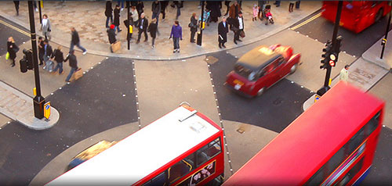
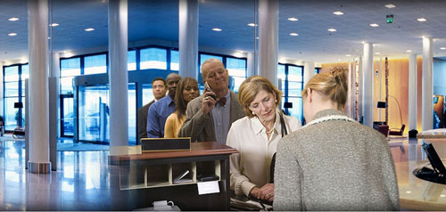
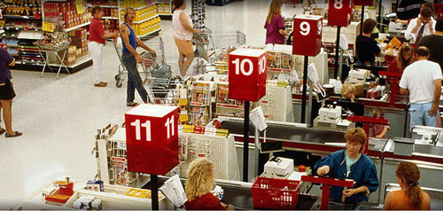

امروزه دوربین های مداربسته با توجه به کاربردهای مختلف و حساسیت محل مورد نظر در شکل ها و صورت های مختلف طراحی و ساخته شده است.
دوربینهای دام یا گنبدی شکل که معمولا بر روی سقف نصب میگردد ( براکتهای دیواری نیز برای این مدل موجود میباشد) . کاور گنبدی شکل ، ظاهری زیبا به این دوربین بخشیده که باعث میگردد در محیط های داخلی اداری و تجاری مورد توجه قرار گیرد . البته در بعضی مدل ها ی این دوربین از کاورهای weather proof ( ضد آب ) و کاور های Vandal ( ضد ضربه ) استفاده شده که نصب آن در محیط های باز ( Out Door ) امکان پذیر میکند.
در گذشته این نوع از دوربینها از تکنولژی بالایی بهره نمیبردند . ولی اکنون در نمونه های جدید تقریبا تمامی قابلیت ها و تکنولژِی های یک دوربین box type به ظاهر زیبای آن اضافه شده که به این دوربین جایگاه خاصی را در سیستم های نظارت تصویری داده است.
مشاهده محصولات

دوربینهای دید در شب از جمله جالبترین و کاربردیترین مظاهر فناوریهای نوین محسوب میشوند. احتمالا نخستین چیزی که با شنیدن نام دوربینهای دید در شب به ذهن خطور میکند، تصوری از جاسوسان یا متخصصان حرفهای است که بهدنبال دستیابی به اهداف خاص خود در سکوت نیمههای شب هستند. در حقیقت با استفاده از این سیستم روِیتی، شخص کاربر دنیایی را مشاهده میکند که سایر افراد عادی دیدن آن عاجز هستند.
همان گونه که گفته شد در این روش نورهای محدود موجود در محیط (ستارهها، ماه و یا فروسرخ) توسط لنز شیئی که یک لنز معمولی است جمعآوری شده و به استوانه کاتدی تقویت تصویر فرستاده میشود. فوتون هاینور در بدو ورود به این استوانه به الکترون تبدیل میشوند. در طول این استوانه الکترونها به واسطه فرآیندهای الکتریکی و شیمیایی از نظر تعداد تقویت میشوند. این الکترونهای مضاعف شده به سمت صفحه فسفریکه الکترونها را مجدداً به نور مرئی تبدیل میکند پرتاب شده و تصویر تولید شده به وسیله این صفحه در لنز چشمی مشاهده میشود. این تصویر بازسازی شده بصورت اشباع مشاهده میشود.
مشاهده محصولات

حرکت افقی ( Pan) تا 360 درجه ، حرکت عمودی ( Tilt ) 90 درجه . قابلیت زوم اپتیکال ( در مدل های مختلف 10x تا 35x ) . لنز Auto Iris ورودی و خروجی های الارم و... اپراتور این دوربین میتواند به راحتی دوربین را در جهت های مختلف هدایت کند و با قابلیت زوم فضا ی بیشتری را پوشش دهد .
از دیگر امکانات این دوربین برنامه ریزی حرکت خودکار و زمان بندی شده بر روی نقاطی است که توسط اپراتور در حافظه دوربین ثبت شده است. قابلیت دنبال کردن سوژه بصورت خود کار نیز در بعضی از مدلها ی پیشرفته موجود میباشد. سرعت چرخش بالا ( تا 100 درجه در ثانیه ) و زوم اپتیکال این دوربین باعث شده تا در مناطق حساس ، سوله ها ، فظا های باز و همچنین برای کنترل ترافیک ، بهترین گزینه باشد.
مشاهده محصولات
دوربین های box type که در بازار، صنعتی نامیده میشوند دارای ظاهری مکعب مستطیل شکل بوده و به دلیل دارا بودن قابلیت نصب لنز های مختلف Fix ، Varifocal ، Motorize ، Auto Iris و همچنین ست شدن با انواع پایه و کاور های خاص ، میتواند در تمامی محیط های مسکونی ، اداری ، تجاری و یا صنعتی نصب و راه اندازی شود .
این نوع دوربین همانند سایر دوربین ها از تکنولژی آشكارسازهای CCD ) Charge Couple Device) و CMOS (Compelementary Metal Oxide Semiconductor ) بهره میگیرند. که البته دوربینهایی که آشکار ساز آنها از نوع CCD میبا شد دارای وضوح و شفافیت بالا تری میباشند . انواع مختلف این دوربین دارای قابلیت هایی از قبیل تنظیمات خود کار و دستی نور و رنگ نیز میباشند.
مشاهده محصولات
حرکت افقی ( Pan) تا 360 درجه ، حرکت عمودی ( Tilt ) 90 درجه . قابلیت زوم اپتیکال ( در مدل های مختلف 10x تا 35x ) . لنز Auto Iris ورودی و خروجی های الارم و... اپراتور این دوربین میتواند به راحتی دوربین را در جهت های مختلف هدایت کند و با قابلیت زوم فضا ی بیشتری را پوشش دهد .
از دیگر امکانات این دوربین برنامه ریزی حرکت خودکار و زمان بندی شده بر روی نقاطی است که توسط اپراتور در حافظه دوربین ثبت شده است. قابلیت دنبال کردن سوژه بصورت خود کار نیز در بعضی از مدلها ی پیشرفته موجود میباشد. سرعت چرخش بالا ( تا 100 درجه در ثانیه ) و زوم اپتیکال این دوربین باعث شده تا در مناطق حساس ، سوله ها ، فظا های باز و همچنین برای کنترل ترافیک ، بهترین گزینه باشد.
مشاهده محصولات
دارای ابعاد کوچکی میباشد ( حدود 3 در 3 سانتیمتر ) دارای لنز ثابت و میکروفن جهت دریافت صدا.
دوربین پین هل ( و یا دوربین لنز سوزنی ) به دلیل حجم کم و لنز کوچک خود این امکان را دارد تا از پشت یک سوراخ 3 میلیمتری ، بصورت مخفی به ما تصویر دهد. این دوربین کیفیت بالایی ندارد و بیشتر برای محیط های کوچک و دارای نور مناسب ( بصورت مخفی ) نصب و راه اندازی میشود .
مشاهده محصولات